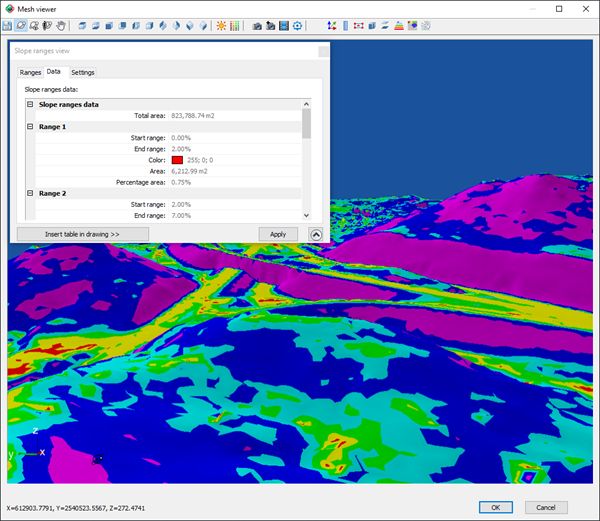
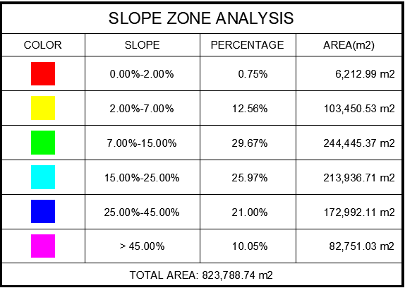
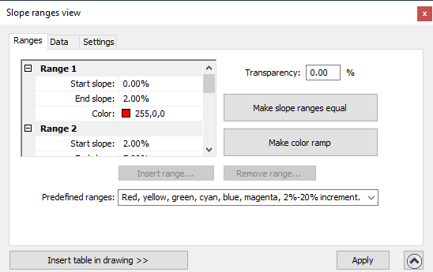
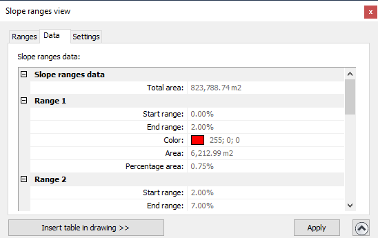
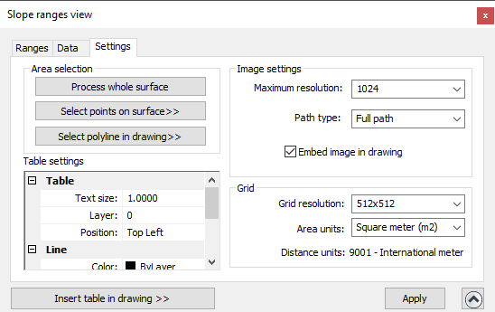

|
|
Toolbar:
Menu: CAD-Earth > Mesh commands > Mesh Viewer
|
|
|
Command line: CE_MESHVIEWER Mesh Viewer toolbar: CAD-Earth version: Premium. |
.png)
.png)
.png)
Command description:
The mesh will shown with the colors specified for each start-end slope defined in each range, inside a region defined by selecting points on surface or an existing polyline in the drawing, or applied to the whole mesh. You can insert a summary table and the corresponding plan view in the drawing with the total area analyzed, color, start-end slopes, area and percentage values for each range defined.


Dialog box settings (Ranges tab):

ØSlope ranges list. Will show the start-end slope percentage and color for each range. This values can be edited
ØTransparency. This value applies to the colors used to display the slope ranges. A value of zero will display a completely solid color, and a value of 100% will be invisible.
ØMake slope ranges equal. Each range will have the same end-start slope difference by dividing the end slope of the last range minus the start slope of the first range divided by the number of ranges.
ØMake color ramp. The range colors will transform gradually from the first range color to the last range color applying linear interpolation.
ØInsert range. Press this button to add a range after the one selected.
ØRemove range. Press this button to delete a range selected.
ØInsert table in drawing. Pressing this button will temporarily close the dialog box to select a point where the summary table and the image from the plan view of the analyzed area will be inserted.
ØApply. The Apply button will be enabled until you define a region to analyze by selecting points on the mesh or selecting an existing polyline or mesh in the current drawing.
Tips:
•Make sure the end slope is the same as the start slope of the next range, and that the end slope is greater than the start slope in each range.
•The last range slope can't be edited and the slope will be greater than the end slope of the penultimate range to the highest slope found.
•The colors from each range must not be repeated in another range.
•The first range can't be deleted.
•To select a range place the cursor inside any of its rows. The current range selected legend will be updated.
Dialog box settings (Data tab):

In this dialog box, the total area analyzed and the start-end slope, color, area and percentage area for each range will be shown. The values cannot be edited.
Tips:
•You can change the units used to display area results in the Settings tab.
•Press the Apply button to update the calculations and the display slope areas.
Dialog box settings (Settings tab):

ØArea selection.
•Process whole surface. The settings will be applied to the entire mesh (default).
•Select points on surface. At least three points must be selected directly on the surface to define a closed region to analyze.
•Select polyline in drawing. An existing LWPOLINE can be selected in the current drawing to define the area to be analyzed.
ØTable settings. You can specify settings for the summary table inserted in the drawing, such as the text size, layer, color and position of the table relative to the plan view of the area analyzed. You can also define the color for the table lines and text style for the title and data displayed.
ØImage settings. These settings apply to the image definition of the area analyzed created when you insert the summary table.
•Maximum resolution. This resolution will be applied to the image of the area analyzed created when the summary table is inserted.
•Path type. The path type only applies if the image is not embedded (not referenced to an external file). The path to the image file, created when the summary table is inserted in the drawing, can be of the following:
•Full path. Image file must be located in the path selected.
•Relative path. The image file must be located in a subfolder or in a parent folder relative to where the drawing file is saved.
•No path. The image file must be located in the same path as the drawing or in any of the support file paths.
ØGrid.
•Grid resolution. The processing time and the accuracy when calculating slope data will be increased selecting higher resolutions.
•Area units. The slope area for each range will be displayed in the selected area units, applying the corresponding conversion factor.
•Distance units. Information about the distance units used when the mesh was created will be displayed here (not editable).
Copyright © 2023 Arqcom Software
Google Earth© is a registered trademark of Google inc. All other trademarks are the property of their respective owners.